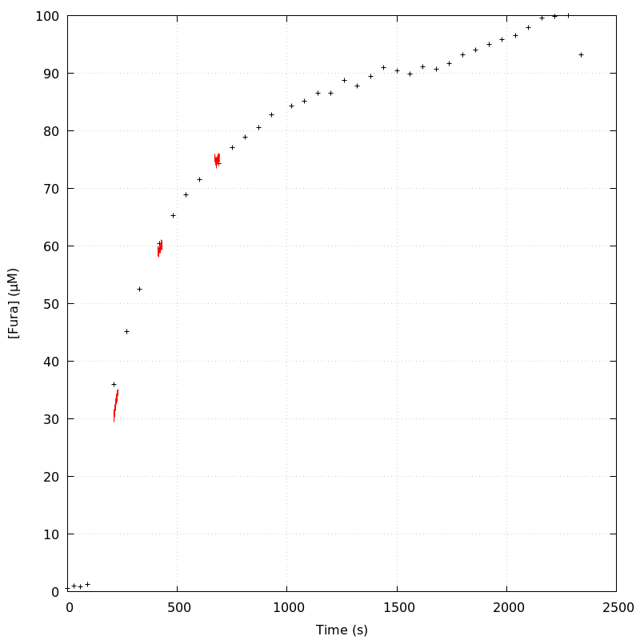
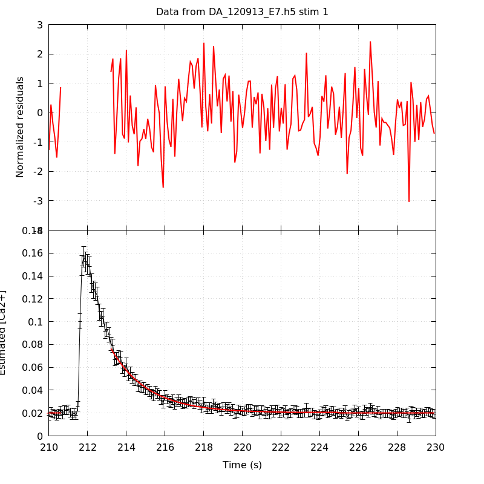
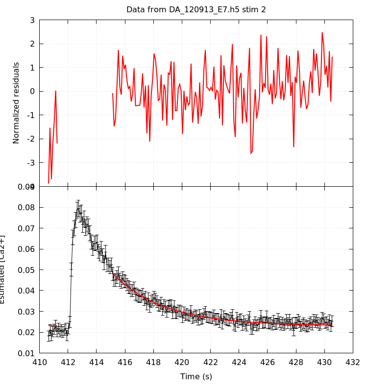
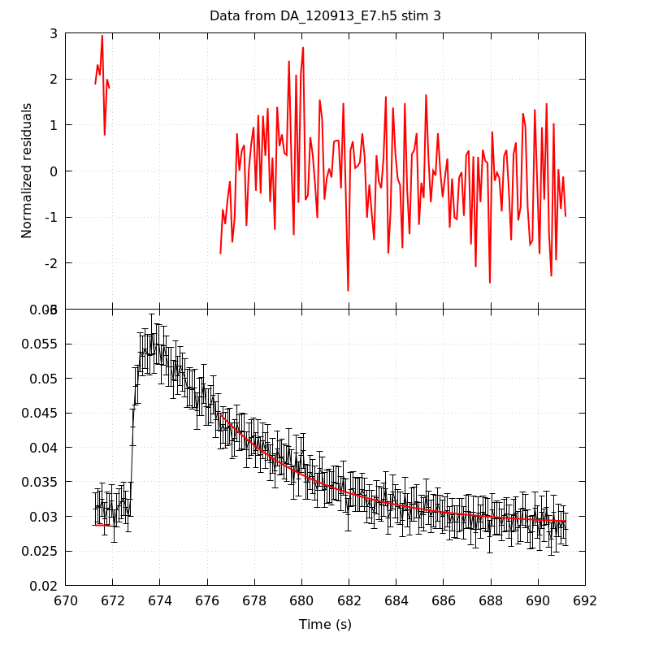
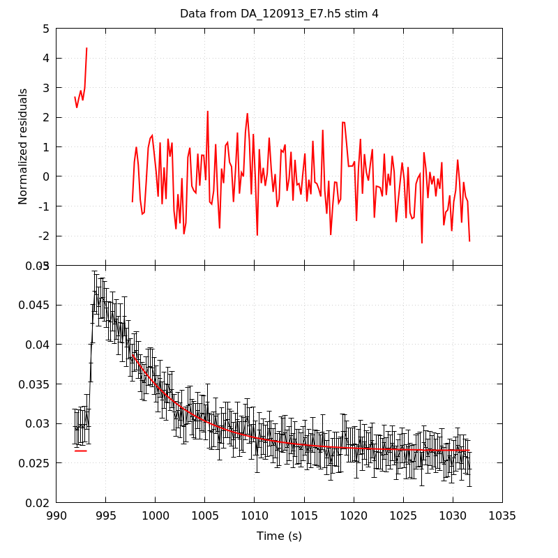
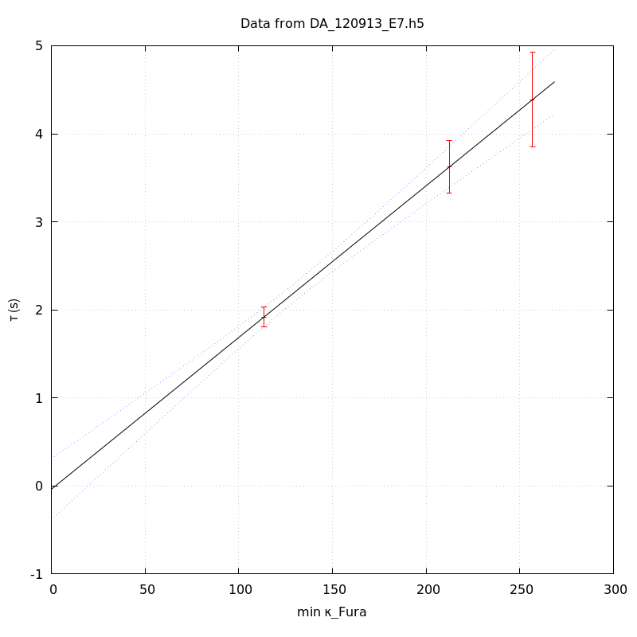
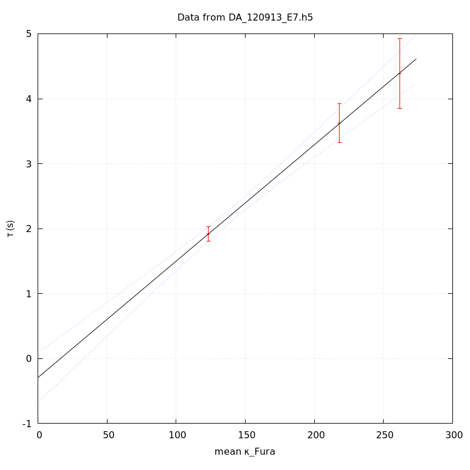
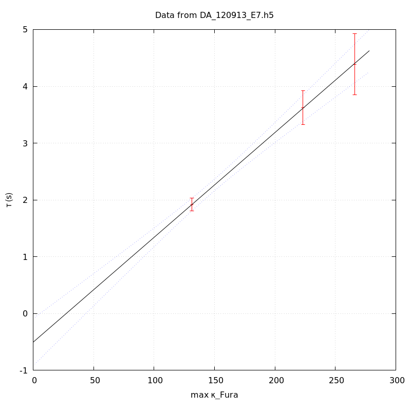

The baseline length is: 7.
When fitting tau against kappa_Fura only the transients for which the fit RSS and the lag 1 auto-correlation of the residuals were small enough, giving an overall probability of false negative of 0.02, were kept (see the numerical summary associated with each transient).
The good transients are: 1, 2, 3.
The time at which the 'good' transients were recorded appear in red.

On each graph, the residuals appear on top. Under the null hypothesis, if the monoexponential fit is correct they should be centered on 0 and have a SD close to 1 (not exactly 1 since parameters were obtained through the fitting procedure form the data.
The estimated [Ca2+] appears on the second row. The estimate is show in black together with pointwise 95% confidence intervals. The fitted curve appears in red. The whole transient is not fitted, only a portion of it is: a portion of the baseline made of 7 points and the decay phase starting at the time where the Delta[Ca2+] has reached 50% of its peak value.
The time appearing on the abscissa is the time from the beginning of the experiment.
Transient 1 is 'good'.

nobs = 175
number of degrees of freedom = 172
baseline length = 7
fit started from point 32
estimated baseline 0.0202758 and standard error 0.000189835
estimated delta 0.0561449 and standard error 0.00116294
estimated tau 1.91964 and standard error 0.0568146
residual sum of squares: 173.543
RSS per degree of freedom: 1.00897
Probability of observing a larger of equal RSS per DOF under the null hypothesis: 0.45269
Lag 1 residuals auto-correlation: 0.113
Pr[Lag 1 auto-corr. > 0.113] = 0.054
Transient 2 is 'good'.

nobs = 162
number of degrees of freedom = 159
baseline length = 7
fit started from point 45
estimated baseline 0.0230988 and standard error 0.000223063
estimated delta 0.0250354 and standard error 0.000494898
estimated tau 3.62301 and standard error 0.151921
residual sum of squares: 198.984
RSS per degree of freedom: 1.25147
Probability of observing a larger of equal RSS per DOF under the null hypothesis: 0.0172396
Lag 1 residuals auto-correlation: 0.226
Pr[Lag 1 auto-corr. > 0.226] = 0.010
Transient 3 is 'good'.

nobs = 154
number of degrees of freedom = 151
baseline length = 7
fit started from point 53
estimated baseline 0.0287479 and standard error 0.000263838
estimated delta 0.0159997 and standard error 0.000403451
estimated tau 4.38565 and standard error 0.274299
residual sum of squares: 179.146
RSS per degree of freedom: 1.1864
Probability of observing a larger of equal RSS per DOF under the null hypothesis: 0.0586175
Lag 1 residuals auto-correlation: 0.047
Pr[Lag 1 auto-corr. > 0.047] = 0.300
Transient 4 is a 'bad'.

nobs = 178
number of degrees of freedom = 175
baseline length = 7
fit started from point 29
estimated baseline 0.0265472 and standard error 0.000143812
estimated delta 0.01219 and standard error 0.000412535
estimated tau 6.2297 and standard error 0.407447
residual sum of squares: 210.162
RSS per degree of freedom: 1.20093
Probability of observing a larger of equal RSS per DOF under the null hypothesis: 0.0357996
Lag 1 residuals auto-correlation: 0.396
Pr[Lag 1 auto-corr. > 0.396] = 0.000
Since the [Fura] changes during a transient (and it can change a lot during the early transients), the unique value to use as '[Fura]' is not obvious. We therefore perform 3 fits: one using the minimal value, one using the mean and one using the maximal value.
The observed tau (shown in red) are displayed with a 95% confidence interval that results from the fitting procedure and is therefore meaningful only if the fit is correct!
No serious attempt at quantifying the precision of [Fura] and therefore kappa_Fura has been made since the choice of which [Fura] to use has a larger effect and since the other dominating effect is often the certainty we can have that the saturating value (the [Fura] in the pipette) has been reached.
The straight line in black is the result of a weighted linear regression. The blue dotted lines correspond to the limits of pointwise 95% confidence intervals.

Best fit: tau = -0.0368993 + 0.0172296 kappa_Fura
Covariance matrix:
[ +3.15025e-02, -2.20589e-04
-2.20589e-04, +1.69113e-06 ]
Total sum of squares (TSS) = 175.538
chisq (Residual sum of squares, RSS) = 0.00016647
Probability of observing a larger of equal RSS per DOF under the null hypothesis: 0.989706
R squared (1-RSS/TSS) = 0.999999
Estimated gamma/v with standard error: 58.0398 +/- 4.38066
Estimates kappa_S with standard error (using error propagation): -3.14163 +/- 10.3027
kappa_S confidence intervals based on parametric bootstrap
0.95 CI for kappa_S: [-20.6793,19.9355]
0.99 CI for kappa_S: [-25.7473,29.3511]

Best fit: tau = -0.292744 + 0.0179219 kappa_Fura
Covariance matrix:
[ +3.84271e-02, -2.55578e-04
-2.55578e-04, +1.82979e-06 ]
Total sum of squares (TSS) = 175.538
chisq (Residual sum of squares, RSS) = 0.00328115
Probability of observing a larger of equal RSS per DOF under the null hypothesis: 0.954321
R squared (1-RSS/TSS) = 0.999981
Estimated gamma/v with standard error: 55.7978 +/- 4.21148
Estimates kappa_S with standard error (using error propagation): -17.3345 +/- 11.0072
kappa_S confidence intervals based on parametric bootstrap
0.95 CI for kappa_S: [-34.116,5.49188]
0.99 CI for kappa_S: [-38.2808,14.3063]

Best fit: tau = -0.50432 + 0.0184497 kappa_Fura
Covariance matrix:
[ +4.47173e-02, -2.85348e-04
-2.85348e-04, +1.93919e-06 ]
Total sum of squares (TSS) = 175.538
chisq (Residual sum of squares, RSS) = 0.006514
Probability of observing a larger of equal RSS per DOF under the null hypothesis: 0.935673
R squared (1-RSS/TSS) = 0.999963
Estimated gamma/v with standard error: 54.2015 +/- 4.09104
Estimates kappa_S with standard error (using error propagation): -28.3349 +/- 11.6459
kappa_S confidence intervals based on parametric bootstrap
0.95 CI for kappa_S: [-44.889,-7.14473]
0.99 CI for kappa_S: [-49.342,1.11591]
3 out of 4 transients were kept.
sigma(tau): 0.0568146, 0.151921, 0.274299
Residual correlation at lag 1: 0.11295059907195004, 0.2262615694013584, 0.04655570761404221
Probablity of a correlation at lag 1 smaller or equal than observed: 0.05400000000000005, 0.010000000000000009, 0.30000000000000004
RSS/DOF: 1.00897, 1.25147, 1.1864